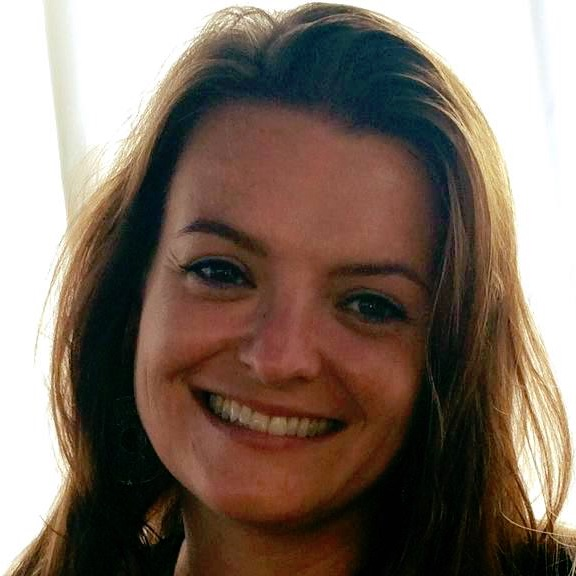

Our People
Our dedicated network of staff, advisors, and volunteers work tirelessly to connect international employers to talented refugees. We are based across global offices in the United States, Jordan, Lebanon, Australia, and Canada.
Washington, DC
Mary Louise Cohen
Founder
Bruce Cohen
Founder
Gary Slaiman
Corporate Outreach Advisor

Sayre Nyce
Executive Director
Leah Nichles
International Affairs Director
Madeline Holland
Outreach and Project Manager
Rachel Lawrie
Corporate Outreach Manager
Yosief Hiyabu
Administrative Manager
Middle East & North Africa
Haitham Kukhun
Jordan Project Manager
AmmanLaura Schrier
Regional Program Manager
Amman / BeirutNoura Ismail
Strategy Manager
BeirutMalika Laasri Lahlou
Senior Advisor
RabatAustralia

Steph Cousins
Director - Australia
MelbourneJohn Cameron
Chief Technology Officer
MelbourneNick Adler
Refugee Migration Advisor
SydneyMarijke Frantzen
Partnership Manager
SydneyCanada
Latin America
Dana Wagner
Canadian Partnerships Advisor
Toronto
Julian Ginzo
Latin American Partnerships Advisor
Buenos Aires